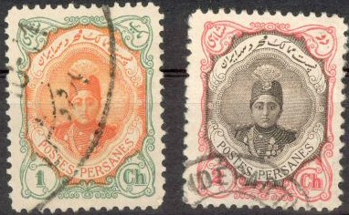
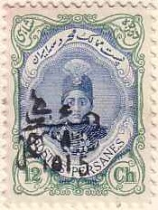
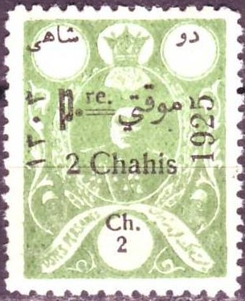

(Reduced size)
Return To Catalogue - 1870-1893 issues
Note: on my website many of the
pictures can not be seen! They are of course present in the
catalogue;
contact me if you want to purchase the catalogue.
More information about stamps from Persia, forgeries etc. can be found on: http://www.persi.com/fakes/fake.html or http://www.iranphilatelic.org/scams.htm.
For stamps of Persia issued before 1911, click here.

(Reduced size)
1 ch green and orange 2 ch red and brown 3 ch grey and green 5 ch lilac and red 6 ch grey and red 6 ch green and brown 9 ch brown and lilac 10 ch red and brown 12 ch green and blue 13 ch violet and blue 24 ch brown and green 26 ch blue and green 1 Kr blue and red 2 Kr green and lilac 3 Kr lilac and black 4 Kr blue and grey 5 Kr red and blue 10 Kr brown and red 20 Kr brown and yellow 30 Kr red and green
Value of the stamps |
|||
vc = very common c = common * = not so common ** = uncommon |
*** = very uncommon R = rare RR = very rare RRR = extremely rare |
||
| Value | Unused | Used | Remarks |
| All values | vc to c | vc to c | |

Genuine 'Officiel' overprint
Most of these stamps (except 5 ch, 12 ch, 24 ch and 4 Kr) exist with overprint 'Officiel' and arabic text (1912) in order to mark the stamps sold at the post office (a large number of stamps was stolen).

'Relais' overprint
The values 2 ch, 3 ch, 5 ch, 6 ch, 12 ch and 13 ch exist with overprint 'Relais' and arabic text (1912).
The values 2 c, 3 c, 6 c, 9 c, 13 c, 26 c and 1 K exist with an arabic overprint in a rectangle with rounded corners (1912). This overprint is rare.
The values 2 Kr to 30 Kr exist with overprint '1337' in arabic numerals (1919). The value 2 Kr exists with a similar overprint '1339'.


Genuine stamps with genuine 'CONTROLE 1922' overprints.
Most values exist with 'CONTROLE 1922' overprint (also with further surcharges).
Surcharged


'1 CH 1914' on 13 ch violet and blue '3 CH 1914' on 26 ch blue and green '1 CHAHI 1915' on 5 ch lilac and red '2 CHAHI 1915' (black or violet) on 5 ch lilac and red '6 CHAHI 1915' on 12 ch green and blue '10 Ch.' on 6 ch grey and red (1921) '1 Kr.' on 12 ch green and blue (1921)
Image obtained from http://www.magazzuphil.com/

'1 CH' on 10 ch red and brown (1917?) '3 CH' on 10 ch red and brown (1917?) 3 ch on 12 ch green and blue (1919) '5 Chahis' on 1 Kr blue and red '6 Chahis' on 10 ch red and brown (1917?) '6 CHAHIS' and year on 10 ch red and brown (1919) '6 Chahis' on 12 ch green and blue (1917?) '6 CHAHIS' on 12 ch green and blue (1921) '6 CHAHIA' and year on 1 K blue and red (1919) '10 CHAHIS BENADERS' on 6 ch grey and red (1921) '12 Chahis' on 1 Kr blue and red (1917) '24 Chahis' on 1 Kr blue and red (1917) '1 KRAN BENADERS' on 12 ch green and blue (1921)
For these stamps with overprint 'BUSHIRE Under British Occupation' click here.

1 c red and blue 2 c bue and red 3 c green 5 c red 6 c green and red 9 c brown and violet 10 c green and brown 12 c blue 24 c brown (2 shades)
Value of the stamps |
|||
vc = very common c = common * = not so common ** = uncommon |
*** = very uncommon R = rare RR = very rare RRR = extremely rare |
||
| Value | Unused | Used | Remarks |
| All values | vc to * | vc to * | |
All values exist with overprint 'SERVICE' at the bottom and arabic text at the top (issued 1915 as official stamps).
In 1921 some values (3 c, 5 c, 6 c, 10 c and 12 c) were overprinted with '21.FEV.1921':
For these stamps with overprint 'BUSHIRE Under British Occupation' click here.
All above stamps also exist with overprint 'COLIS POSTAUX' (parcel stamps).
1 K brown, grey and silver 2 K blue, red and silver 3 K violet, brown and silver 5 K brown, green and silver 1 T violet, grey and gold 2 T green, brown and gold 3 T red, brown and gold 5 T blue, brown and gold
Value of the stamps |
|||
vc = very common c = common * = not so common ** = uncommon |
*** = very uncommon R = rare RR = very rare RRR = extremely rare |
||
| Value | Unused | Used | Remarks |
| All values | vc to * | vc to * | |
All values exist with overprint 'SERVICE' at the bottom and arabic text at the top (issued 1915 as official stamps).
With '21.FEV.1921' overprint
In 1921 some values (1 K, 2 K and 5 K) were overprinted with '21.FEV.1921'.
For these stamps with overprint 'BUSHIRE Under British Occupation' click here.
All above stamps also exist with overprint 'COLIS POSTAUX' (parcel stamps).

Overprinted 'Provisoire 1919' 1 ch yellow 3 ch green 5 ch red 6 ch violet 12 ch blue Overprinted 'Pre 1924' and surcharged
1 ch on 1 ch brown 2 ch on 2 ch grey 3 ch on 3 ch red 6 ch on 6 ch red Overprinted 'Pre 1925' and surcharged


I've been told that this is a forgery of a stamp issued in 1925.
The forgeries have a double line above the word 'POSTES' while
the genuine stamps only have a single line.
2 ch on 2 ch green 3 ch on 3 ch red 6 ch on 6 ch blue 9 ch on 9 ch brown 10 ch on 10 ch grey 1 K on 1 K green 2 K on 2 K violet
Value of the stamps |
|||
vc = very common c = common * = not so common ** = uncommon |
*** = very uncommon R = rare RR = very rare RRR = extremely rare |
||
| Value | Unused | Used | Remarks |
| All values | vc to * | vc to * | |
1 ch orange 2 ch red 3 ch brown 6 ch brown 9 ch green 10 ch brown 12 ch red 1 K blue 2 K blue and red 3 K violet and brown 5 K red and brown 10 K violet and black 20 K green and black 30 K orange and black
Value of the stamps |
|||
vc = very common c = common * = not so common ** = uncommon |
*** = very uncommon R = rare RR = very rare RRR = extremely rare |
||
| Value | Unused | Used | Remarks |
| All 'ch' values | vc to * | vc to * | |
| 1 K to 5 K | * to *** | c to ** | |
| 10 K to 30 K | *** | ** to *** | |
{kind=link}